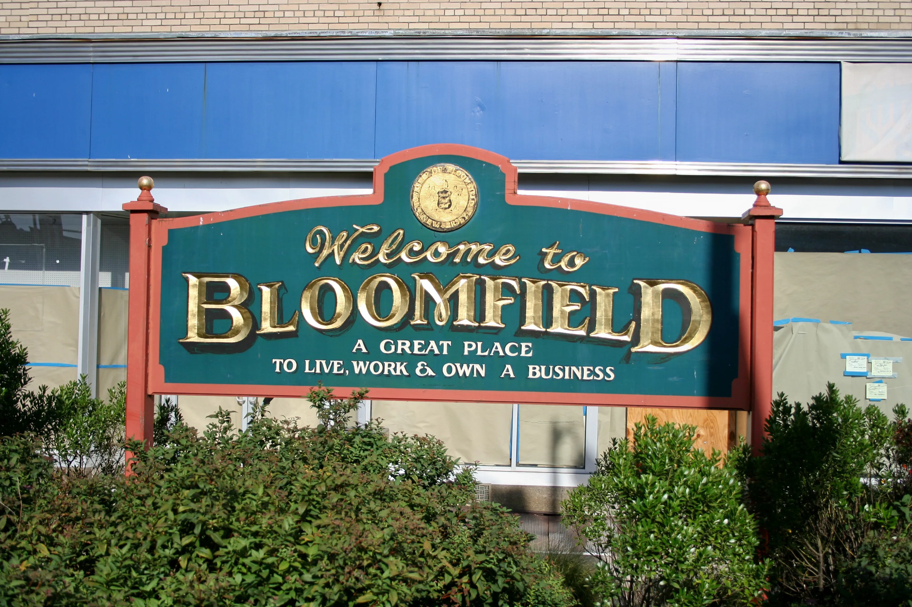

I'm a future Computer Engineer from New Jersey! I'm Looking for new and exciting opportunities to further develop my skills! Keep scrolling to find out more about me!
Hi! My full name is Jordan Furtado and I am 20 years old!
I'm a trans man 🏳️⚧️, and my pronouns are he/him!
I grew up in Bloomfield, New Jersey!
I am currently going to school at Rutgers University studying Computer Engineering. As of right now I am a rising junior in the class of 2027. My end goal is to have a career within virtual reality!
I have learned several instruments which include guitar, piano, saxophone, clarinet, and ukulele!
If not in school you can likely find me playing one of these many instruments or listening to music!
My favorite artist is Billie Eilish with my favorite song of Halley's Comet!
I have a cute dog named Lucky and a silly orange cat named Mango! Amusingly I am actually highly allergic to both but I love them dearly.